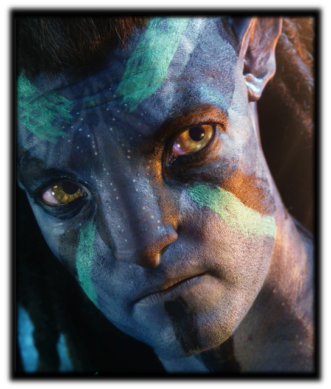

DECEMBER - 16
CHARACTER
제이크 설리
Jake Sully
위대한 토루크 막토라고 불리는 아바타 1편의 주인공.
긴 레게머리와 강인하고 선한 눈을 가진 제이크 설리는 인간의 삶을 포기한 후 나비족이 되었다.
현재는 아내인 네이티리와 4명의 자녀들이 있으며 자신을 위협해오는 RDA를 피해 가족이 모두 멀리 떠나기로 결정한다.
네이티리
Neytiri
강인하고 똑똑한 아바타 1편의 주인공.
판도라의 숲을 가족처럼 사랑하는 네이티리는 남편 설리와 4명의 자녀들과 평온한 일상을 보내고 있었다.
그러던 중, RDA가 침략하여 아이들을 인질로 삼게 되고 이내 숲까지 태워버린다. 이를 본 네이티리는 절규하며 전투에 돌입하게 된다.
키리
Kiri
제이크 설리와 네이티리가 입양한 딸로 설리 가족의 장녀이자 4남매 중 둘째 딸.
입양 전 그레이스 박사의 아바타에게서 태어난 아이로 아바타와는 다르게 5개의 손가락을 가졌다.
어느 날 동생들과 외출을 나갔다가 낮잠에 빠진 키리는 마일스 쿼리치의 분대와 조우하여 인질로 붙잡히게 된다.
로날
Ronal
바다에 사는 물의 부족 멧케이나를 이끄는 강한 전사.
임신을 한 로날은 이주해 온 설리의 가족에게 악마의 피가 섞였다며 경계하고 배척하는 모습을 보인다.
하지만 남편 토노와리가 이주를 허락하자 마지못해 받아들인다.
토노와리
Tonowari
바다에 사는 물의 부족 멧케이나의 족장.
임신한 아내 로날과 자녀 2명의 자녀가 있다.
어느 날 갑자기 찾아온 제이크 설리의 가족을 아내는 경계하였지만 토노와리는 정중히 맞이하며 인사한다.
그런데 숲의 부족인 설리의 가족이 바다에서 살겠다며 이주 요청을 하자 난처해 한다.
츠이레야
Tsireya
바다에 사는 물의 부족 족장의 딸. 제이크 설리의 가족이 피신을 위해 멧케이나에 도착했을 때 처음으로 등장한다. 부족에서는 우려와 경계를 드러내지만 타인에 대한 관심과 배려를 중요하게 생각하는 츠이레야는 그들을 도와준다.
로아크
Loak
제이크 설리와 네이티리의 아들로 설리 가족 4남매 중 둘째 아들.
RDA의 재침략으로 전투가 지속되고 작전 중에 망을 보는 임무를 부여받는다.
그러나 이를 어겨서 외출금지 명령을 받게 되고 외출금지 명령마저 어기다가 위험에 처하게 된다.
마일즈 쿼리치
Miles Quaritch
인간에서 아바타가 된 베테랑 군인.
과거 제이크 설리가 복무했던 판도라 헬스 게이트 기지의 보안책임자이다.
AMP 슈트의 조종 실력도 매우 능숙하며 체력도 좋다.
나비족에 대해 혐오스러워 하며 적대적인 생각을 가지고 있지만 자신의 편이라고 생각하면 진심으로 아껴준다.
제이크 설리

네이티리
키리
로날
토노와리
츠이레야
로아크
마일즈 쿼리치